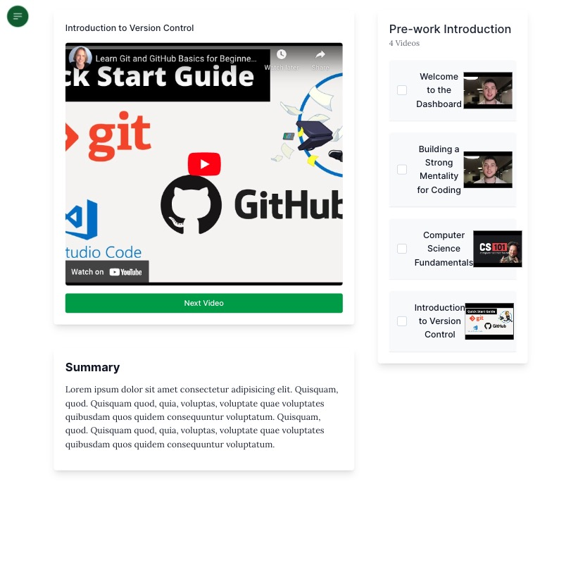

During my time at Codefi, I had the opportunity for a paid work experience. I would be placed with one of several companies partnering with Codefi to allow students to earn while we learn. My previous React experience landed me with Codefi itself, working on the next version of the learning dashboard for prospective students. This project used the Next.js framework, Tailwind CSS, Prisma and Docker.
This project was a great opportunity to learn more about React through Next.js, and to work with a team of professional developers. I was tasked with adding a video player and interactible playlist for students to watch the lessons. I worked on the arrangement and styling of the dashboard components, database queries, state management, and the functionality of the "Next Video" button.
The paid work experience was a part-time commitment alongside keeping up to date with the class responsibilities, and lasted around 2 months. I was able to learn a lot about working with a team of developers, regular stand-ups, sprints, JIRA and how to work with a codebase that I didn't write myself.